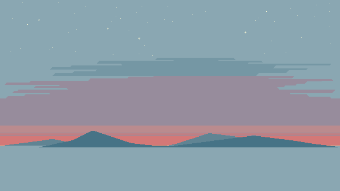
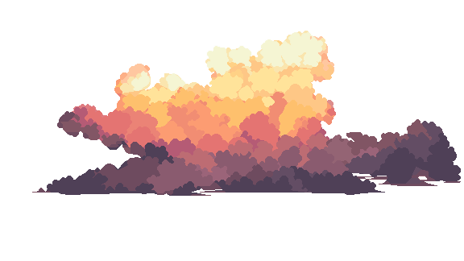
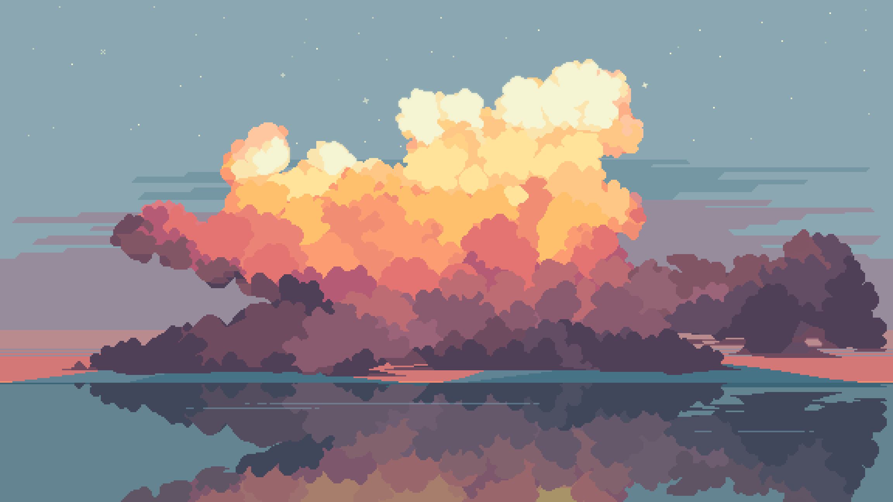

Survive the nights. Build a shelter. Find all six legendary relics.
Art, UI & sounds by Kenney (CC0) · Backgrounds by CraftPix.net (OGA-BY 3.0)
Music: "Feel Good Island" by Brandon Morris (CC0) · "Spooky Island" by Eric Matyas, Soundimage.org (CC-BY 4.0)
Full list in assets/CREDITS.md